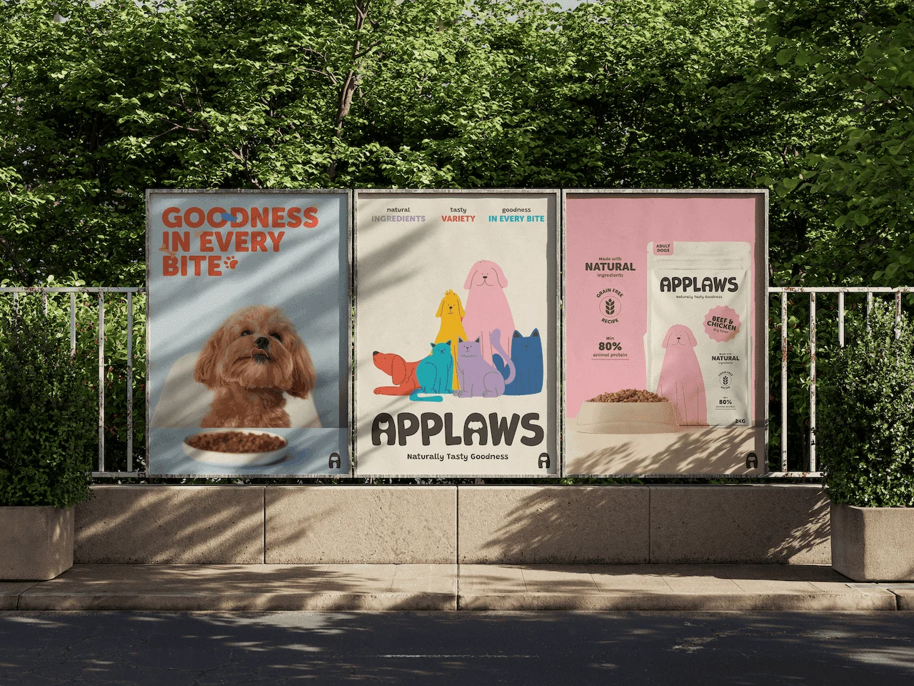
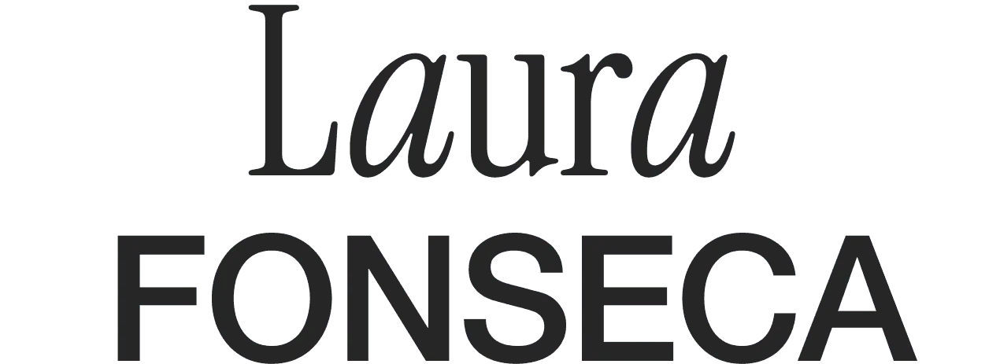
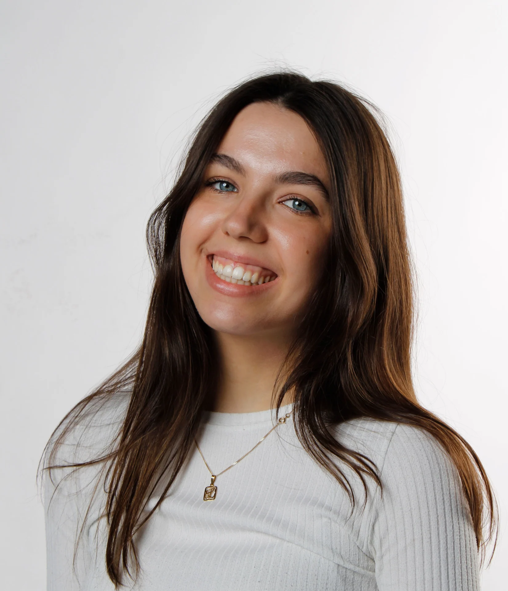

Laura Fonseca — Diseñadora gráfica

Proyectos seleccionados
SOBRE / MÍ
Me gusta transformar ideas en historias visuales. Creo en un diseño donde creatividad y estrategia se encuentran para crear identidades que dejan huella.

Estudio Diseño Gráfico y Multimedia y me interesa especialmente el branding, la identidad visual y la comunicación gráfica. Me gusta crear piezas con intención, personalidad y sentido.
Descargar CVEXPERIENCIA
WPP Production
Septiembre 2026 – PresenteCreative Art TraineeMadrid
- Desarrollo y adaptación de piezas gráficas para Movistar, enfocadas principalmente en comunicación y materiales para sus puntos de venta.
WSC
Septiembre – diciembre 2025Diseñadora Gráfica en prácticasMadrid
- Apoyo en el desarrollo de proyectos de branding, identidad visual y diseño gráfico para distintos clientes.
- Investigación visual, benchmarking y búsqueda de referencias para el desarrollo de proyectos.
- Colaboración con el equipo de diseño en todas las fases del proceso creativo, desde la conceptualización hasta la entrega final.
- Adaptación de diseños según el feedback del equipo y las necesidades del cliente.
FORMACIÓN
UDIT
Septiembre 2023 – junio 2027Grado bilingüe en Diseño Gráfico y MultimediaMadrid
Metropolitan University
Febrero – junio 2026Programa Erasmus+, Bachelor in Graphic DesignBudapest
HERRAMIENTAS
- Figma
- Adobe Illustrator
- Adobe Photoshop
- Adobe InDesign
- Adobe Premiere
- Adobe After Effects
HABILIDADES
- Creatividad
- Comunicación
- Resolución de problemas
- Adaptabilidad
- Gestión del tiempo
- Colaboración
IDIOMAS
- Español
- Lengua materna
- Inglés
- C2, Proficiency Cambridge Certificate
- Alemán
- A1, Goethe Institute